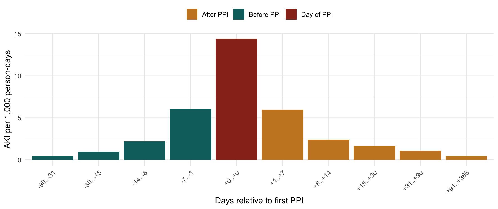

| Window | Side | Person-days | AKI | Rate / 1,000 person-days |
|---|---|---|---|---|
| -90..-31 | before | 144,292 | 63 | 0.44 |
| -30..-15 | before | 49,333 | 47 | 0.95 |
| -14..-8 | before | 23,314 | 51 | 2.19 |
| -7..-1 | before | 24,300 | 147 | 6.05 |
| +0..+0 | day of prescription | 3,535 | 51 | 14.43 |
| +1..+7 | after | 23,428 | 140 | 5.98 |
| +8..+14 | after | 21,939 | 53 | 2.42 |
| +15..+30 | after | 47,200 | 78 | 1.65 |
| +31..+90 | after | 155,287 | 172 | 1.11 |
| +91..+365 | after | 494,151 | 240 | 0.49 |
PPI → AKI after ICI — Co-timing Diagnostics
Is the association a drug effect, or the encounter that produced the prescription?
NoteAbout this page
Renders aggregate results only from cache/*.rds built by data_management.qmd. No patient-level row reaches the output; cells below 11 are suppressed. Follow-up horizon is 730 days.
The time-varying Cox model in analysis.qmd answers one question: is the AKI hazard higher while a patient is on a PPI? It cannot answer a second one: is the PPI doing it? A drug ordered at the same clinical moment as the outcome will look causal to any model that only knows exposure status at each instant.
Three diagnostics separate the two. All of them re-zero the clock on each patient’s own initiation date rather than on the ICI infusion.
1 The mirror window
If a PPI causes AKI, the rate should be flat before the prescription and raised after it. This table places windows on both sides of each initiator’s own PPI date. Person-time is counted over the observation window (last creatinine, death, or horizon) — not the at-risk window, which stops at the AKI and would delete every patient whose AKI came first.

ImportantHow to read this
The rate in the week before the prescription is close to the rate in the week after it, and the single highest-rate window is the prescription day itself. A drug cannot raise risk in the week before it is taken, so a symmetric peak centred on day 0 points to a shared cause — the acute admission that produces both the stress-ulcer prophylaxis order and the daily creatinine draws.
2 Hazard by time since initiation
Splitting the exposed person-time by how long the patient has actually been on the drug. A pharmacologic effect should persist with continued exposure; an artifact of the ordering encounter should decay.
| Time since first PPI | Person-years | AKI | Rate / 100 py | HR (95% CI) |
|---|---|---|---|---|
| unexposed | 7464.0 | 1269 | 17.0 | 1.00 (reference) |
| d0-7 | 62.3 | 147 | 236.0 | 9.77 (8.19-11.65) |
| d8-30 | 158.6 | 131 | 82.6 | 3.61 (3.00-4.34) |
| d31-90 | 347.3 | 168 | 48.4 | 2.49 (2.10-2.94) |
| d91-365 | 1036.3 | 237 | 22.9 | 1.69 (1.46-1.97) |
| d>365 | 540.2 | 51 | 9.4 | 0.99 (0.73-1.33) |
3 Induction-period ladder
Credit exposure only from lag days after the prescription, and drop the induction window from the risk set entirely rather than handing it back to the comparator. A real effect plateaus; a co-timing artifact decays monotonically.
| Induction period (days) | AKI events | HR (95% CI) |
|---|---|---|
| 0 | 2003 | 2.57 (2.32-2.84) |
| 30 | 1732 | 1.85 (1.65-2.09) |
| 90 | 1560 | 1.60 (1.39-1.85) |
| 180 | 1427 | 1.36 (1.12-1.64) |
4 Death as a negative-control outcome
The same exposure structure, with death as the outcome. Creatinine sampling can manufacture an AKI; nothing manufactures a death. Follow-up here runs to death or the horizon and is not censored at the last creatinine, because death is ascertained from the registry rather than from labs.
| Time since first PPI | AKI HR (95% CI) | Death HR (95% CI) |
|---|---|---|
| d0-7 | 9.77 (8.19-11.65) | 5.51 (4.57-6.64) |
| d8-30 | 3.61 (3.00-4.34) | 4.64 (4.07-5.28) |
| d31-90 | 2.49 (2.10-2.94) | 3.12 (2.79-3.49) |
| d91-365 | 1.69 (1.46-1.97) | 2.04 (1.86-2.24) |
| d>365 | 0.99 (0.73-1.33) | 1.46 (1.26-1.70) |
ImportantHow to read this
If starting a PPI predicts death at least as strongly as it predicts kidney injury, then whatever the exposure is marking is general illness severity, not nephrotoxicity.
5 Steroid co-initiation
The imbalance that the time-varying steroid term exists to absorb.
| Group | N | Started a systemic steroid | % |
|---|---|---|---|
| Never PPI | 5895 | 3736 | 63.4 |
| Started PPI | 3016 | 2735 | 90.7 |
Aggregate results only; cells below 11 suppressed. Horizon 730 days.